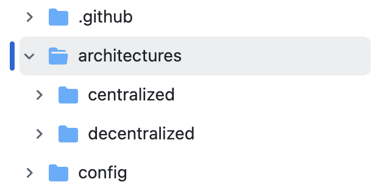

Analysis of the Psyche Network Project (AI + Web3)
Project Background
Psyche Network is a project at the intersection of AI and Web3, developed by the Nous Research team. Two months ago, it secured $50 million in Series A funding led by Paradigm.
The project’s background is detailed in this official article. The Nous Research team developed a decentralized algorithm called DeMo, which enables large language model (LLM) training across a distributed network without the need for tightly coupled cluster infrastructure. It’s somewhat analogous to how mining pools distribute large tasks to individual miners—though the underlying algorithms are fundamentally different. This is just a conceptual comparison.
For the technical details of how DeMo splits and merges training tasks, refer to the official explanation. It involves vectors, weights, loss functions, etc. As for preventing nodes from submitting fraudulent results, those mechanisms are assumed to be handled algorithmically and won’t be further discussed here.
The DeMo paper describes training experiments using 100 billion tokens. To put that in perspective, DeepSeek-V3 used about 15 TB of tokens, showing that DeMo is still far from commercial-grade scale. Here’s a comparison of various models’ token counts:
| Model | Parameters | Pretraining Tokens | Source |
|---|---|---|---|
| GPT-3 | 175 B | ≈ 499 B | Paper and summaries |
| GPT-3.5 | 175 B | ~1 T (estimated) | — |
| GPT-4 | 1.7 T | ≈ 13 T tokens | SemiAnalysis / The Decoder |
| Llama 3 | 70 B | > 15 T tokens | Meta official card |
| DeMo OLMo | 1 B | 0.1 T tokens (100 B) | DeMo paper |
Psyche Network uses DeMo’s algorithm combined with blockchain to build a distributed network. Its first-stage goal is to train a model with 40 billion parameters and 20 trillion tokens. My understanding is: parameters are fixed at the start of training, while tokens represent the volume of training data, and DeMo focuses on the distributed computation of tokens. The Psyche Network website shows real-time training progress—currently over 1 TB of tokens processed:
Once trained, the model could approach GPT-3 level. Though the token count is higher than GPT-3’s, the parameter count is lower, so performance might be slightly inferior.
Project Structure
The Psyche Network documentation outlines a fairly straightforward architecture. A centralized Coordinator creates training tasks, and Client nodes receive and submit results. Without blockchain, communication is handled via direct TCP connections. With blockchain, messages between Coordinator and Clients are transmitted via smart contracts:
In the codebase, both centralized and decentralized architectures are maintained. This isn’t ideal, as it implies the system was originally centralized and is now undergoing decentralization—meaning full decentralization may be limited.
In the decentralized version, Psyche Network uses Solana to run smart contracts, likely because the project is built in Rust.
Under the decentralized directory, you’ll find Solana contracts responsible for creating training tasks, calculating client rewards, and distributing rewards.
Currently, Psyche Network is in its testnet phase, with on-chain transactions running on Solana Devnet. Contract addresses are hardcoded, e.g., the Coordinator contract’s address is HR8RN2TP9E9zsi2kjhvPbirJWA1R6L6ruf4xNNGpjU5Y, and you can view transaction history on the Solana block explorer.
Reward calculation is fairly simple due to the centralized Coordinator. After verifying the result from a Client, the Coordinator sends a transaction to assign points. The relevant logic is in these two lines of code:

Each Client’s score is stored on-chain. To claim rewards, Clients call the treasurer contract, which calculates and transfers tokens based on score and exchange rate.
Which token is used? The Coordinator specifies it when creating the task, and any standard SPL token is acceptable, as shown here:

In summary, Psyche Network uses Solana blockchain to store task metadata, calculate rewards, and distribute tokens. As long as Clients can join permissionlessly, the project achieves its advertised goal: decentralized compute for LLM training.
While token-based rewards are standard in blockchain projects, they add transparency and traceability. Psyche Network will likely launch its own token eventually. It could evolve into a full-fledged LLM training task platform where third parties can create tasks and issue rewards—similar to EigenLayer’s model.